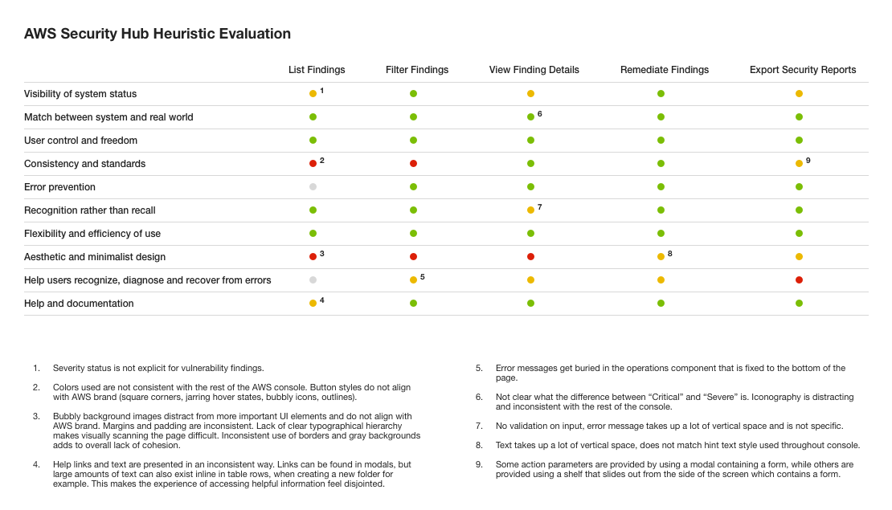
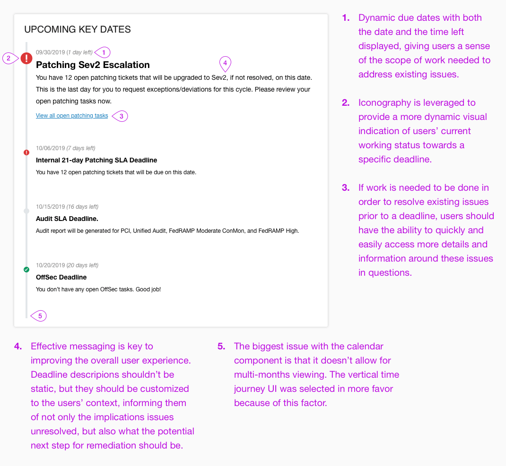

Larry Ellison speaking about the company's critical focus on Security (as part of its strategic investment into the cloud) at Oracle OpenWorld 2019 - Oracle's annual tech conference
Security means business
Keeping Oracle Cloud Infrastructure (OCI) secure is a task of paramount importance that holds a central role in OCI's customer experience strategy. As an organization, possessing a robust security posture would provide OCI with the foundation that enables customers to trust it with their most valuable workloads. In this respect, the company's ability to provide leading security requires that it strives to address the following business goals:
- Regulatory Adherence & Accreditation - Keep OCI out of legal complications and win more business.
- OCI Security Bar - Do the things necessary to secure our cloud.
- Rapid Security Response - Fix all the bad things we find as efficiently as possible.
- Scalable Security Operations - Keep up with 1, 2, and 3 as OCI continues grow.
Problem Statement
As a whole, a broad range of user profiles at OCI either directly deal with or may have interest in the subject of Security. OCI service teams wants to be efficiently notified of security findings related to their services and accordingly provided with a clear path to remediation; leadership wants to quickly understand the security status of assets owned by their teams and services, aggregated at any level; and Security / Compliance teams rely on security findings reports to understand the risk to OCI's compliance posture, giving them the ability to effectively generate reports for auditors.
Generally, these diverse different needs all derive from a single mutually shared problem:
"OCI's overall security posture is bad due to a lack of awareness / knowledge around what the causes are and how to remediate them"
Which accordingly corresponds with a high-level design question:
"How can we dynamically visualize OCI's security posture and path to remediation to a broad set of users with different backgrounds and needs?"
Introduction to Security Central
From a product perspective, two high-level requirements need to be addressed:
- Rapidly changing asset information (physical and virtual) across OCI needs to be dynamically captured and surfaced to users.
- Based on the collected asset information, users accordingly need a centralized view of the security status for all these tracked assets.
Spotlight
A legacy tool - Spotlight - did exist to partially solve this problem. Nonetheless, while Spotlight served as an effective asset manager, it didn't quite do a good job at visualizing the desired centralized view of the organization's security posture. Attempting to surface this information in the old world would have required substantial cross-orgs human efforts that are heavily reliant on manual tracking tools such as JIRA. In order address its business goals and accordingly provide optimized security across the board, OCI needs an application that can pull these existing data dynamically, in real time, and on demand.
In comes Security Central.

Asset management and asset security reporting form the core of Security Central, and is critical to keeping OCI secure.
Drilling into the problem space
Through user feedback, interviews, telemetry analysis, and an affinity diagramming exercise, a list of different themes that are relevant and all play a role in determining OCI's security posture is outlined. Each of these themes presents granular challenges and user pain points that are essentially a level drilled down from the big problem statement above:
- Overall Security Posture & Security Operations Management
- Vulnerability Findings Remediation / Patching Completeness
- Security Bar Performance Assessment

Affinity diagramming helps in identifying the top-level themes, thereby enhancing the design and product team's understanding of the problem space.
Design goals
To help better direct and keep the UX direction focused, a set of design goals and corresponding success metric(s) have been crafted for each defined theme:

Success metrics are crafted based on existing operational data frequently generated to illustrate different facets of OCI's security posture.
User goals & questions
All users care about the overall security posture of OCI, but depending on their backgrounds and needs, they may possess additional granular goals, needs, and questions. Different questions are asked by different groups of users, and it's important to precisely identify these connections (i.e. which user would ask what question, and why?) in order to better assess where the design priorities should be. These questions are all directed and lead by specific goals users strive to achieve by executing certain workflows. A big table is created to consolidate all of this data. Below is a sliced portion of it:

Early design
Conducting user research is extremely critical in opening more doors to better understanding user contexts. Equipped with this knowledge gain, early design sketches are accordingly produced to visualize plausible user journeys / workflows and how different stages throughout these flows may be mapped to the defined user goals and questions:

User journey mapping as an exercise creates opportunities for the design and product team to expand further on the user workflows and envision how different interfaces / views could be designed to support them. The User Goals & Questions table is revisited frequently during this stage to ensure that user needs are always taken into account. As the creative process begins with more interfaces coming into the picture, an extra column is added to the table to delineate how specific views could be leveraged to support specific user goals / needs:

Competitive analysis
Part of understanding users and their context is understanding the ecosystem within which they operate, and part of understanding this ecosystem requires an analysis of various competing providers of the same product, service, or simply solutions to similar UX problems. Competitive analysis is therefore a crucial aspect of the process. Not only does serve as a source for creative inspiration, it also helps surface better understandings around what works and what doesn't, thereby revealing opportunities where unarticulated user needs may be addressed:
Heuristic evaluation is a common exercise that often accompanies these competitive analyses:
User testing
To avoid designing in a vacuum and ensure that a highly collaborative process is followed, coordination and support across all relevant products / functional areas - as well as other relevant stakeholders - are involved. Amongst different stakeholder groups, users play the most critical role. They too are involved in the design process in the form of user testing.

Selected examples of how user testing helps to reveal design gaps and influence design directions
1. Upcoming Key Dates - Since Security Central's inception, users have repeatedly expressed a desire to have a "timeline visualization". Essentially, they need an effective mechanism that can help provide better visibility into relevant security timelines (i.e. host patching) and the important dates / gates they should be aware of. Early design explorations made use of common time-related components such as the vertical time journey (top) or the calendar (bottom):

User testing, however, reveals that:
- Users need a timeline view that spans across two consecutive months. Some cycles start on the 15th of every month and lasts for the entire thirty days.
- Rather than just telling them of upcoming deadlines, users prefer the system to dynamically inform them whether they actually have to care about these deadlines (based on their custom environments). For example, if they have completed host patching for the current cycle, they wouldn't have to worry about any upcoming patching-related deadlines. Users need the system to communicate this message effectively.
- Security is critical by nature, and users need to be (subtly) given a sense of urgency when it comes to security matters. Informing them of upcoming deadlines is nice, but they need to better understand the implications / consequences of not hitting these due dates.
- The "timeline visualization" is an opportunity where users can be guided towards solutions for a set of particular issues. They have a deadline coming up, they know they have stuff to work on, they are informed of the implications of not addressing them, but where do they start? Again, such messaging needs to be intelligently communicated to users.
These learnings in turn present the design and product team with an opportunity to modify the "Upcoming Key Dates" card on the Summary Dashboard view in order to better serve user needs:
2. My Organization - Early user research studies have uncovered an opportunity for Security Central to provide a visualization of OCI's security posture across different business organizations and their corresponding leaders (VP-level). Essentially, users would like to view how an organization under a specific VP within OCI is performing in terms of security, and how these aggregated data can drill down to the managers and teams that report up to that particular VP. Naturally, early design explorations made use of common organization-related components like the vertical org-chart view below:

User testing, however, reveals that:
- Users have difficulties trying to quickly assess the view above and seamlessly pull the most critical numbers from it. Their attention is often distracted and scattered across the entire page, without the critical areas getting the attention they deserve.
- Using an org-chart view makes it difficult for users to conduct a holistic assessment of all the different direct reports and teams that report up to a specific leader. If a VP, for instance, has more than twenty direct reports, users would have to scroll down indefinitely in order to get all the data they need. They prefer to be able to achieve this goal with only a quick glance.
- The org-chart view leaves for too much unneccessary empty real estate.
These learnings in turn present the design and product team with an opportunity to modify the "My Organization" view in order to better serve user needs:

High-Fidelity Design
Below is a few selected hi-fidelity wireframes produced for various purposes, including leadership demos, user testing, and general design-dev collaborations. These are created using the existing UI components library utilized by the UI dev team.
Summary Dashboard - Before

Summary Dashboard - After
Labelled are the important design decisions / directions made for the Summary Dashboard view:

Security Bar Performance Dashboard
The OCI Security Bar refers to a set of minimum security requirements (defined by OCI itself) that every service team within the company has to fulfill in order to meet its baseline security compliance standard (i.e. failing to check off these requirements means failing to meet the required security compliance for OCI to stay in business). In a nutshell, if an OCI product team wants to keep building and deploying features and services to its customers, it is imperative that it meets every single one of these Security Bar items.
In this respect, one of the original asks for Security Central was to show how each business organization within OCI (lead by a VP) is performing from a Security Bar standpoint (i.e. are teams meeting the bar? what's the risk of teams not meeting the bar and putting OCI out of compliance? etc.). In a way, the design context for this ask is quite similar to that of the "My Organization" view above - to produce a visualization that can illustrate OCI's security posture across different business organizations and their corresponding leaders (specifically from the lens of the defined Security Bar program). This view - which ultimately is placed under the "Compliance & Monitoring" tab following a series of user testing - is primarily consumed by the very top senior executive leadership at OCI.
Below are a few hi-fidelity wireframes of this Security Bar Performance dashboard:


Progress Tracking
The original design goals and their corresponding success metric(s) are constantly tracked and monitored as one simple validation of the design directions taken. One year following numerous iterative UI/UX enhancements to Security Central, the results have been quite encouraging:

Design / Product Opportunities
Designing for Security Central is a super exciting project, as it presents endless opportunities where design and technology can join force to create a real impact for users and on the business. Throughout the design and development process, multiple areas have been identified as future design aspirations the team could take on to make Security Central an even more delightful application for users:
1. Dynamic forecasting and adjusting - With OCI's strategic focus on autonomous security, powered by machine learning and artificial intelligence technologies, Security Central will have the ability to automatically identify issues, forecast needs, and automatically make holistic adjustments across the entire user fleet in order to maintain their security posture.
2. Personal and human - A relationship between OCI and users already exist, as they use its products and interact with its brand. Why not speak to them conversationally and present information in a way that feels personable and human. After all, companies build products so they may work for users - not the other way around. Security Central, as a product, strives to help users become more efficient in their jobs. Why not present information in a way that makes users perceive Security Central as if it's an extension of their team.
3. Contextual content - Users shouldn't have to dig into different areas of a product to obtain different documents and information they need to complete a task. As a product, Security Central should be able to intelligently display the relevant information in one place by seamlessly integrating information, documents, and functions into single, easy-to-consume views - wherever and whenever users may need them.
4. Going external - Security Central has proven its value with measurable benefits as an internal tool within OCI. And there shouldn't be any limitations to what it can do for external customers as well. With OCI offerings becoming increasingly diverse in breadth and depth, along with third-party integrations, customers will start caring deeply about the security posture of their own built environments and systems on top of the OCI infrastructure. Security Central, inevitably, will have the potential to become the one stop shop for all things security-lated consumable by external customers too.
Special Bonus: Introducing Redwood
Oracle recently introduced its brand new user experience design language - Redwood - to the world at its 2019 OpenWorld conference. This marks an exciting beginning for the company and its brand, and is the fruit of one year worth of tireless creative exploration, execution, supported by collaborative efforts that span across various strategic organizational functional areas. With the launch of Redwood, Oracle's vision is to completely revamp its customer experience with its products and brand. In the words of an Oracle design executive:
"Redwood is for our products user interfaces and for telling our story. It's for both our digital and our physical experiences. It's a new design system for Oracle."
It truly is an exciting time to be a UX Designer at Oracle, and it certainly is a huge design opportunity for Security Central to elevate to an experience status that will not only be functional and reliable, but also usable and delightful in such a way that users will love and consistently emerge with a positive emotional outcome.